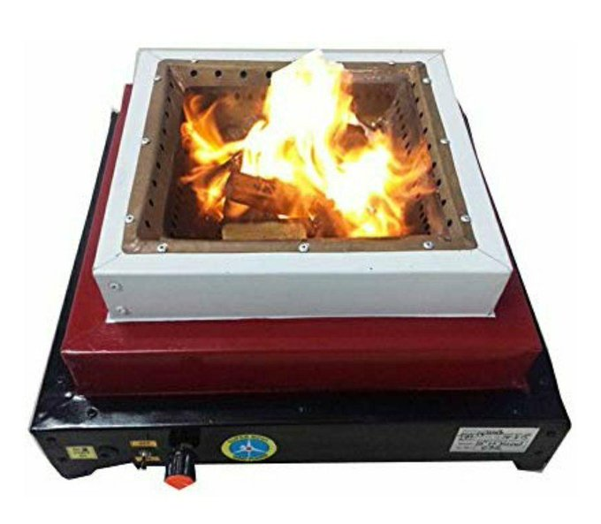

If the combustion area is large enough and not cramped, equivalent to burning wood out in the open. Or in principle equivalent to a “Cube with 2 sides open” type stove with pot on top.
Example: traditional homa-kUNDa-s (Idealized).
Characteristics
Consumes quite a bit of wood.
Lot of smoke when the fire is low, and in the initial and terminal stages.
Ash accumulation + charcoal creation observed.
Improvement with grill and sieve
This seems to achieve characteristics similar to “Cube with 2 sides open + holes for ventilation at the bottom and sides” type described below.
Improvement with holes, fan fitted at bottom
supernova model
“this kund generates lowest % of carbon-monoxide and needs less quantity of yagna herbal material as the material is vaporized and gasified 100% without waste because the temperature attained by the kunda is always above 300°C along with the purified flames upto 1300°C, the Kund is designed from copper pot to get the uniform temperature along with the impact of copper oxygenation which play vital role in purification of atmosphere. "

smokeless-kuNDa-supernova
“The fallen ash collects in a bottom plate, above the fan, which can be disposed easily.
You can adjust the speed of the fan, or use it for initial jwalanam, then switch off.
I think this will be more useful where charu, apoopa etc are offered as havis.”
Cube with 2 sides open
Characteristics
Relatively inefficient burning - tends to produce charcoal besides ash, quite a bit of smoke.
Indian cooking smoke (indoor) said to equal 20 cigarettes a day (source: prakti promotional video).
mud stoves cost 250 Rs in 2018 and lasted 6 months.
Cube with 2 sides open + holes for ventilation at the bottom and sides
Realizations
Prakti woodstove.
Characteristics
Relatively efficient burning. 70 to 90% less smoke compared to basic “Cube with 2 sides open”. (Numbers from prakti woodstove videos 2018.) Is this still equal to 2 cigarettes a day (going by prakti promotional videos)?
Must clean up ash buildup at the bottom so as to not block air.
One needs to keep pushing the wood in - with hand or with gravity to keep the stove burning.
Key principles
Air intake: One leaves generous space to suck in air from under the mesh which holds the wood fuel sticks - or one provides a separate air intake pipe at the bottom.
Chimney effect - described seperately.
Needs a minimum height.
Even the smoke/ soot burns in good models.
Limited fuel consumption:
Only a small part of the wood ever burns - very efficiently at that, at high temperature.
Insulation: Combustion, air-sucking and cooking efficiency keeps increasing with temperature increase. So, the stove body is ideally well insulated.
The addition of chimneys, in all cases, reduces smoke pollution. It also increases combustion efficiency due to the chimney effect - more effectively pulling fresh air.
Chimney effect - height of the chimney is directly proportional to the pressure with which cold air gets sucked in.
Elevation
कुण्डानाम् उच्चतया धूमप्रभावेणायुर्हरणं न स्यात् तावत्।
{kind=link}
{kind=link}